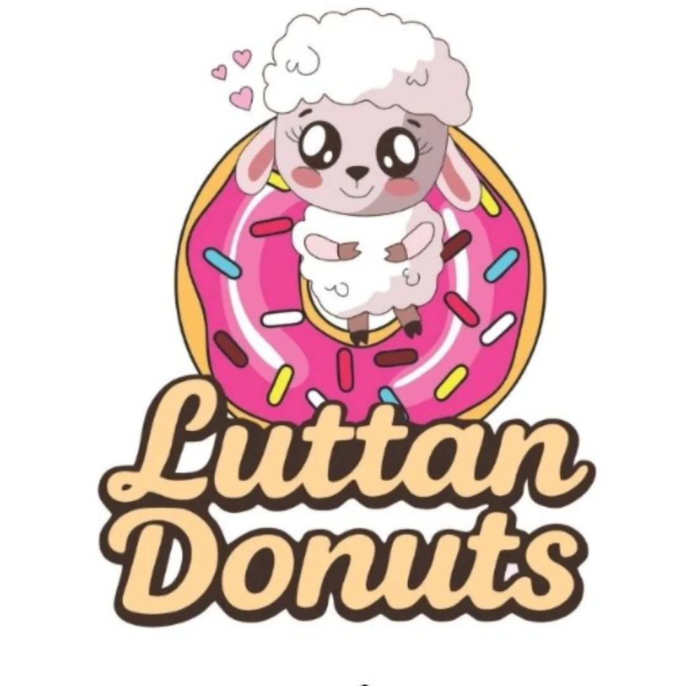

Luttan Donuts

Proyecto de software orientado a la administración de ventas, gastos e inventario de un negocio de donuts.

Proyecto de software orientado a la administración de ventas, gastos e inventario de un negocio de donuts.
Sistema para gestionar productos, categorías, inventario y ventas de una papelería.
Sitio web personal creado para presentar información sobre mi perfil, habilidades y proyectos.